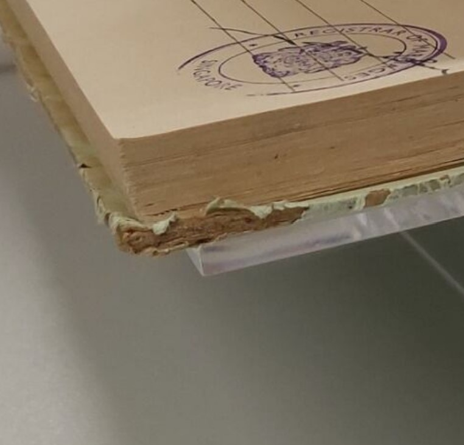

Delamination of the edges of the cover in this bound volume.
Delamination
Description
Separation of layers in an object or material composed of multiple layers (sometimes called a laminate), often due to the failure of an adhesive or binding agent.
Treatment Notes
- Stabilise the separated layers
Materials Affected
Paper, Books